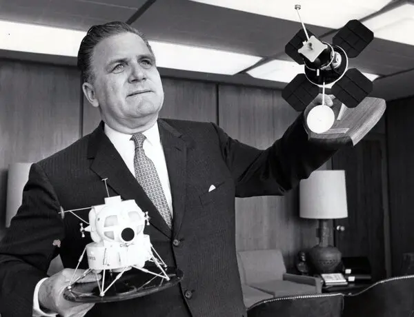

The James Webb Telescope
"Picturing Our Past"
Meet James Webb

James Erwin Webb
(1906-1992)
James Webb served NASA from 1961-1968 as its Administrator
He saw through the Apollo 1 disaster, and is commended for
his handling of the tragedy. He was a great proponent for
Space Telescopes during his time at NASA, even while working
towards the first landing on the moon, and is fondly remembered
for his dedication and capability.
Discoveries Of The Webb Telescope
The Phantom Galaxy
The Phantom Galaxy is a spiral galaxy where
tendrils of darkness stretch out from its
brilliant blue core. While the Hubble photographed
the Galaxy previously, the Webb Telescope
has uncovered the strains of heat emitting gas and dust.